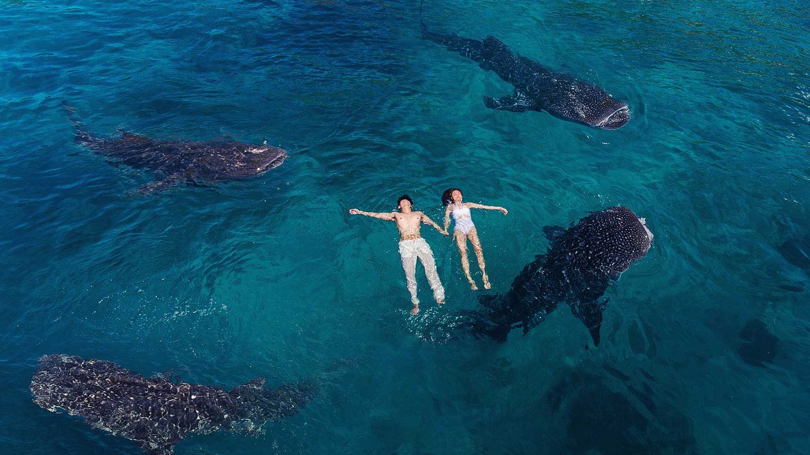

Swim With Whale Sharks
Whale sharks can be seen in a small barangay Tan-awan, which is 10 km away from the center town of Oslob. Whale shark watching in Cebu started last September 2011 and it became popular all over the world when the news hit in the internet last November 2011. By December 2011, local fishermen's interact with the whale sharks by feeding them that result to flocking of tourist to the beach of Tan-awan.